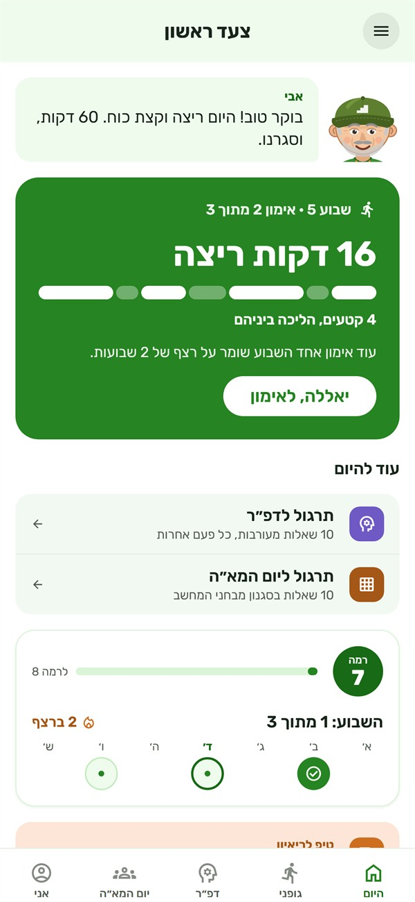
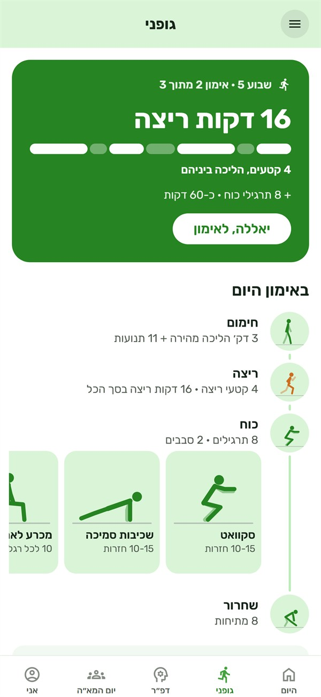
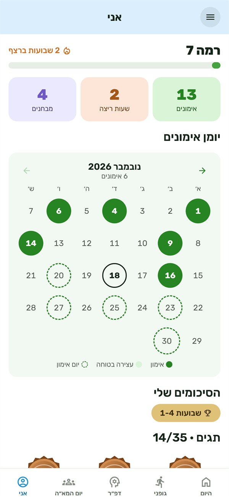

מתכוננים לגיוס. צעד אחרי צעד.
תוכנית כושר אישית, תרגול לדפ״ר וליום המא״ה – עם אבי, שמלווה כל הדרך. בקצב שלך.
בקרובApp Store
בקרובGoogle Play
ההורדה חינם, והשבוע הראשון חינם – הכל פתוח, בלי פרטי אשראי.


כושר לפני הגיוס
12 שבועות של ריצה וכוח – מדקת ריצה ראשונה ועד 30 דקות ברצף.
- 3 עד 5 אימונים בשבוע, בימים שבוחרים. בפארק או בבית.
- כל אחד מתחיל מהמקום שלו, וכל תרגיל אפשר לעשות קל יותר.
- טיימרים, הדגמות וצפצופים – פשוט עוקבים אחרי אבי.

תרגול דפ״ר
שאלות חדשות בכל סבב, בכל ארבעת החלקים.
- סבב קצר, סבב עם שעון ומבחן תרגול מלא.
- טעית? רואים למה – ומתרגלים בדיוק את מה שקשה.

תרגול ליום המא״ה
מבחני מחשב בשבעה חלקים, ותרגול לשלוש תחנות הזום.
- מפות, תפיסה מרחבית, אלגוריתמים, עיבוד מידע ועוד.
- דיון קבוצתי, הדרכה וסימולציה – מתרגלים בקול מול אבי.

רואים כמה התקדמת
יומן אימונים, רמות, תגים – וכובעים חדשים לאבי.
- כל אימון וכל סבב תרגול שווים נקודות.
- סיכום כל ארבעה שבועות, וכרטיס לשתף עם חברים.
הכל נשאר בטלפון
בלי חשבון, בלי שרת ובלי פרסומות.
- בלי הרשמה
- לא צריך שם, טלפון או מייל כדי להתחיל.
- להורים
- מה בדיוק נשמר – במדיניות הפרטיות.